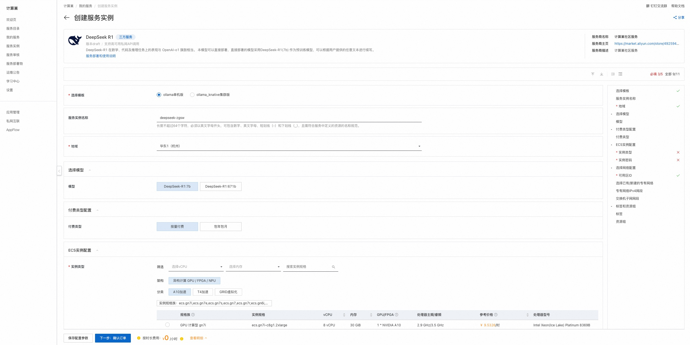

DeepSeek R1单机版部署文档
DeepSeek-R1简介
DeepSeek-R1是深度求索（DeepSeek）于2025年1月20日发布的开源人工智能大型语言模型。在数学、代码及推理任务上的表现与 OpenAI-o1 旗鼓相当。 DeepSeek-R1(7b)是 DeepSeek R1 的中端版本。其设计目标是将 DeepSeek R1 的强大推理能力转移到更小的模型中，以提高计算效率和部署灵活性。
Open WebUI和Ollama简介
Open WebUI 是一个功能丰富且用户友好的自托管 Web 用户界面（WebUI），它被设计用于与大型语言模型（LLMs）进行交互，特别是那些由 Ollama 或与 OpenAI API 兼容的服务所支持的模型。
Ollama 是一个开源项目，其主要目标是简化大型语言模型（LLMs）的部署和运行流程，使得用户能够在本地机器或私有服务器上轻松运行这些模型。
Open WebUI和Ollama做了集成，可以轻松在web界面上管理大模型，本服务通过Ollama运行DeepSeek-R1模型，您可以在Open WebUI中直接选择DeepSeek-R1模型进行对话。
计费说明
DeepSeek社区版在阿里云上的费用主要涉及： * 所选GPU云服务器的规格 * 磁盘容量 * 公网带宽 计费方式：按量付费（小时）或包年包月 预估费用在创建实例时可实时看到。
RAM账号所需权限
| 权限策略名称 | 备注 |
|---|---|
| AliyunECSFullAccess | 管理云服务器服务（ECS）的权限 |
| AliyunVPCFullAccess | 管理专有网络（VPC）的权限 |
| AliyunROSFullAccess | 管理资源编排服务（ROS）的权限 |
| AliyunComputeNestUserFullAccess | 管理计算巢服务（ComputeNest）的用户侧权限 |
部署流程
-
单击部署链接，进入服务实例部署界面，模板选择ollama单机版，选择模型（DeepSeek-R1（内置7B，14B，32B，70B）或 DeepSeek-R1-671B（内置671B））。根据界面提示选择模型并填写参数，可以看到对应询价明细，确认参数后点击下一步：确认订单。
注意： 1. 如果要使用70B的模型，推荐选用64GB以上显存的规格。 2. 如果要使用轻量GPU实例规格，需要手动安装GPU驱动。 
-
确认订单完成后同意服务协议并点击立即创建。
-
等待部署完成后就可以开始使用服务，进入服务实例详情点击Address访问。

使用说明
公网OpenWebUI地址
-
访问概览页的公网OpenWebUI地址，注册管理员账号并登录。

-
登录成功后即可使用默认的deepseek-r1:7b模型进行对话。本服务内置了截图所示的几种参数规模的模型，默认使用7B模型，可以选择下面其他参数规模的模型。请根据购买的ECS规格显存大小进行选择，模型参数规模越大需要的显存越高，启动加载、推理会更慢，推理结果越精确智能。

私网API地址
- 在和服务器同一VPC内的ECS中访问概览页的私网API地址。访问示例如下：
shell curl 私网API地址 -d '{ "model": "deepseek-r1:latest", "prompt": "你是谁？" }' - 如果想通过公网访问API地址，需要打开安全组11434端口，然后访问公网API地址（把私网API地址中的私网IP替换为ECS的公网IP）。访问示例如下：
shell curl http://公网ip:11434/api/generate -d '{ "model": "deepseek-r1:latest", "prompt": "你是谁？" }'
进阶教程
-
在管理员面板中添加其他用户

-
通过面板下载其他模型，支持的模型请查看ollama官网：https://ollama.ai/library